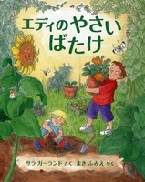
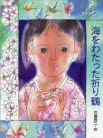
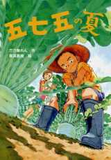
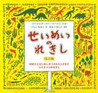
もうすぐ夏休み(なつやすみ)が始(はじ)まりますが みなさんはどんな計画(けいかく)をたてていますか？ その計画の中に ぜひ！「ゆっくり読書(どくしょ)」もくわえてもらいたいと思います。
エディが自分(じぶん)の畑(はたけ)を作り(つくり)たいといいだすところから始(はじ)まるこのおはなし。ママと妹(いもうと)もいっしょにじゅんびします。
タネはどうやって育(そだ)つんだろう？ エディは水やりや草取り(くさとり)も忘(わすれ)れません。
野菜(やさい)が実(みの)ったあとの楽しみも えがかれています。
育て方(そだてかた)ものっているので、みなさんも家族(かぞく)一緒(いっしょ)に育てたりしゅうかくする楽(たの)しみを味(あじ)わってみてはいかがでしょう。
他 エディのごちそうづくり
実話(じつわ)にもとづいた絵本です。 原爆症(げんばくしょう)で白血病(はっけつびょう)を発症(はっしょう)し、若くして命を落とした禎子(さだこ)さんは「原爆の子の像(ぞう)」のモデルになった女の子です。 広島の原爆と半世紀後(はんせいきご)のニューヨークのビルにジェット機が突っ込んだ同時(どうじ)多発(たはつ)テロ(てろ)事件(じけん)を結び付け、平和の大切さ、原爆の重さをこのお話の折り鶴(おりづる)が伝えてくれます。 8月15日は「終戦(しゅうせん)の日」とされているので、この時期(じき)に読んでもらいたい1冊です。
主人公の順平の両親は川柳(せんりゅう)好きで2人の作品が新聞に入選したのをきっかけに、順平のクラスで川柳の特別授業が行われることになります。
5・7・5のリズムに乗せて、ユーモラスな生活どうわになっています。
身近な人へのかんしゃやいたわりの気持ちについて考えさせられるようなお話です。
他 五七五の秋 、五七五の冬
この本の主役は虫・恐竜・鳥などの動物達から人間や植物たち。 そして地球もひとつの「いのち」であることを感じ、じっくり深読みできる絵本です。
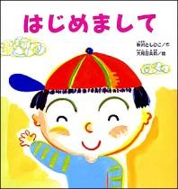
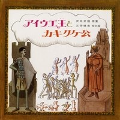
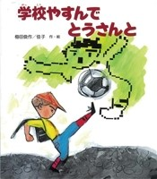
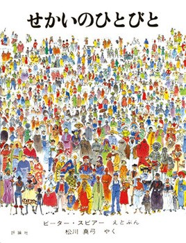
いつもよりおそいスタートになってしまいましたが、いよいよ登校(とうこう)が始(はじ)まりましたね！
どうぞ学校(がっこう)生活(せいかつ)を楽(たの)しんで下(くだ)さい。
「家読(うちどく)」とは、前回ご紹介(しょうかい)しましたが、千葉県(ちばけん)教育(きょういく)
委員会(いいんかい)でも勧(すす)めている家庭(かてい)でのふれあい読書(どくしょ)です。
各ご家庭で読書を通したコミニュケーションや絆(きずな)が深(ふか)まるとうれしいです。
はじめましてのごあいさつ。みんなはちゃんとできるかな。 ねこくんもぞうさんもピアノさんもいすくんも、 自分(じぶん)のとくちょうを一つアピールして はじめましての自己(じこ)紹介(しょうかい)。 仲良(なかよ)しになれそうです！
５０音を使ったユニークな物語(ものがたり)です。 サシスセ僧(そう)も登場し、タチツテ塔(とう)があり、 ナニヌネ野(の)でおこる合戦(がっせん)ストーリーになっています。 低学年は読み聞かせながら、高学年はカタカナだけでなく、 漢字の表現の楽しさも味わえる作品になっています。
みんなが持ってるゲーム機がほしい！ぼくは家に落ちていた１万円札で 思わずゲーム機を買ってしまい、あとで楽しくないことに気づきます。 どうしよう…ウソがばれてしまう。次の日、父さんは会社を休み、 ぼくの学校もお休みにしていっしょにすごします。 父の日も近いので、親子の信頼(しんらい)関係(かんけい)を 家族で味(あじ)わってみませんか。
この地球には、いったいどんな人たちが暮らしているのだろう？ 体の大きさ、肌(はだ)の色、顔の形、住んでる家、好きな遊び、話す言葉…。 世界にはさまざまな民族(みんぞく)、風習(ふうしゅう)、言語(げんご)、 文化(ぶんか)などがあることを、やさしく説明しています。 それぞれがちがっていることの素晴らしさを伝える大型絵本です。
家読(うちどく)のおすすめ２の動画（どうが）です。
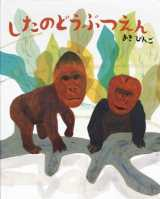
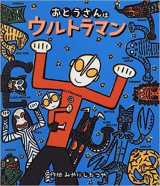
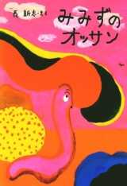
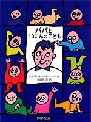
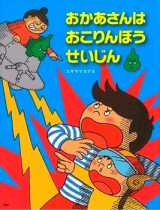
学校司書（がっこうししょ） 田邊 美香（たなべ みか）
普段よりも家族で過ごす時間が長くなっているご家庭も多いと思います。 そのような時間を親子で一緒に本を楽しんでみてはいかがでしょうか。
有名な「上野動物園」には残念ながら今は出かけられませんが、 「したのどうぶつえん」は知っていますか？ オモシロ言葉遊び絵本です。 家族一緒に新しい動物を考えて、本の世界の動物園を楽しみましょう。 ぜひ、考えた動物たちを絵にかいて先生たちにも見せてください！ ※ 他、「したのすいぞくかん」もあります。
この絵本のお父さんは、強くて優しい、 でも、ちょっとお母さんに弱くて子供に甘い… 家族のために一生懸命にはたらくお父さんの姿は ウルトラマンのようにカッコイイですね。 シリーズで出ているのでお気に入りが見つかるとうれしいです。 他 ・パパはウルトラセブン ・帰ってきたおとうさんはウルトラマン ・おとうさんはウルトラマン／おとうさんの休日 ・パパはウルトラセブン、ママだってウルトラセブン
・みんなが困ってる時にあらわれたみみずのオッサン。 オッサンの勇姿をみて子供たちのまなざしはどうでしょう。 オッサンパワーを感じてください。
・会社から帰ると１０人のこどもの世話でおおいそがしのパパ。 ある日、育児につかれたパパがこっそり一人旅にでかけます。 好きなようにすごせて楽しいはずですが、なぜか楽しくありません。 みなさんもいつもより多い家族の時間をもし、もてあましていたら？！ この本をよんでみてください。
おこる親、おこられる子供、それぞれの気持ちを ユーモアたっぷりに描いています。 お父さんが読んであげるとおもしろさ倍増です！
家庭でのふれあい読書を意味する「家読（うちどく）」は、読書を通して、家族の絆や コミュニケーションを深めることを目的とするもので、方法は自由です。
http://www.pref.chiba.lg.jp/kyouiku/shougaku/dokusho/index.html
職員 本の名前 著者（ちょしゃ） 出版社（しゅっぱんしゃ） 学年（がくねん）
子供の読書キャンペーン～きみの一冊をさがそう～ 文部科学省